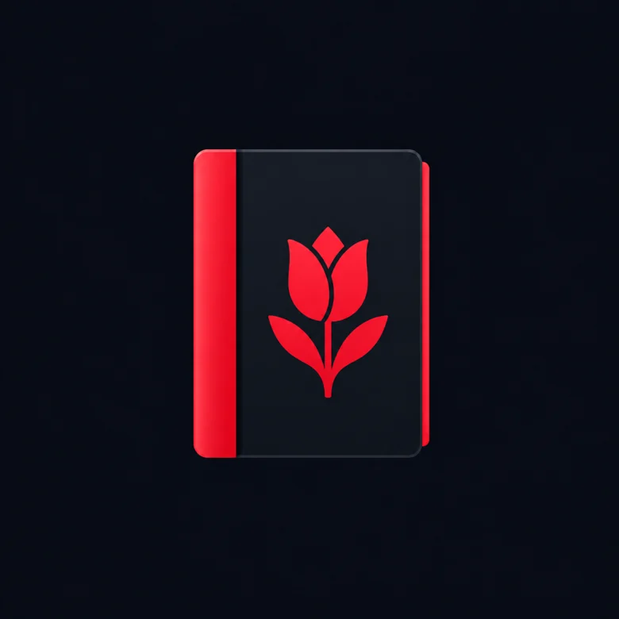
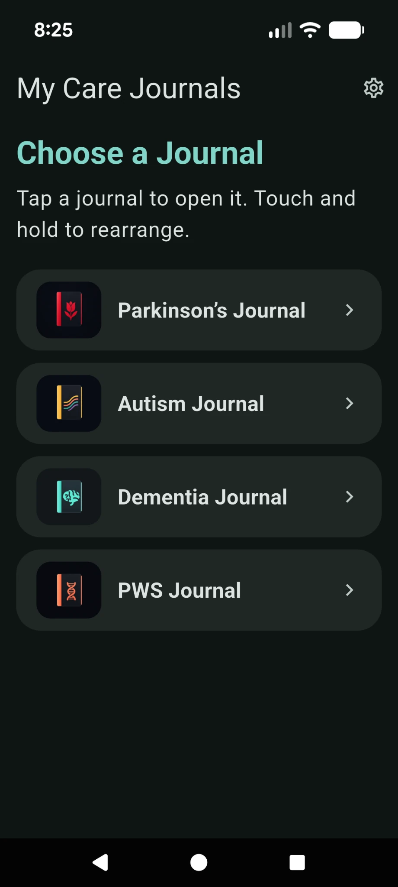
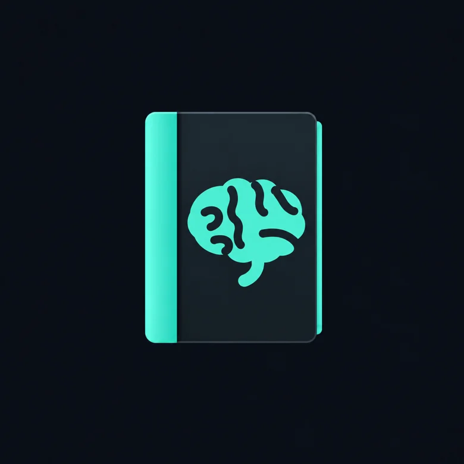
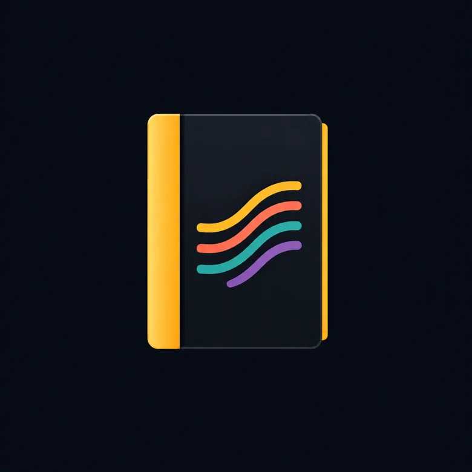
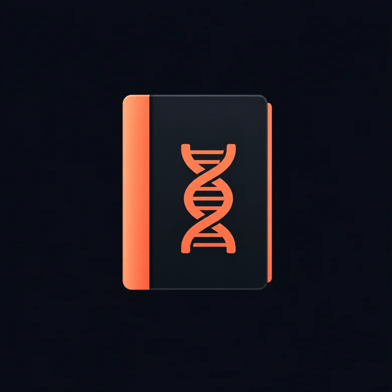

Parkinson’s
Keep track of movement changes, freezing, falls, sleep, mood and daily routines. Record observations over time to help spot patterns.
Keep track of what matters with four focused journals in one easy-to-use app. Recognize patterns, record moments, and keep your caregiving notes privately on your device.
Free original journals · Android available · iPhone version in review

Each journal has categories tailored to a different caregiving experience. Record what happened, revisit past entries and use condition-specific learning resources. Choose the journal that fits your situation.

Keep track of movement changes, freezing, falls, sleep, mood and daily routines. Record observations over time to help spot patterns.

Document confusion, wandering, sundowning, sleep and changes in mood or routines, with notes you can revisit later.

Record sensory experiences, expression, routines, regulation needs and what helped during challenging moments.

Track food-related concerns, anxiety, routines, skin picking, sleep and other observations relevant to PWS care.
All four original journals are included free. Future optional journals may be available as one-time purchases.
Instead of collecting unorganized notes in your phone, keep observations in a journal with categories, helpful prompts and information tailored to the care you provide. You can look back on entries to better understand what has changed or what tends to help.
My Care Journals was created by an independent developer in Maine who also works directly in caregiving. The goal is straightforward: make it easier to keep useful observations organized, find practical information and keep personal notes private.
No app can replace professional advice or the people providing care. It can, however, help you remember the details that matter.
A separate app for keeping track of day-to-day medication routines, including recording completed doses. It remains available for caregivers who want a dedicated medication tool.
View Medication Routine on Google Play ↗Start with the journal that fits your needs. All four original journals are free to use.
Get My Care Journals →